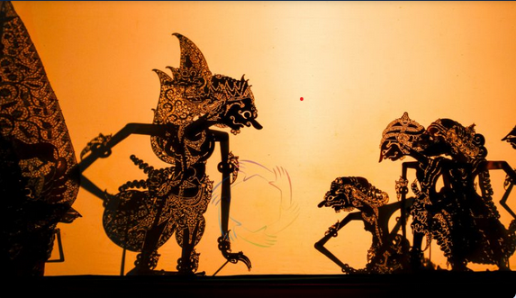
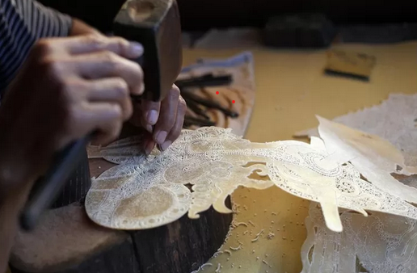

Pengertian Wayang Kulit
Wayang kulit adalah seni pertunjukan tradisional Indonesia yang menggunakan boneka datar dari kulit yang diukir sebagai media untuk menceritakan kisah-kisah legenda, mitologi, dan cerita sejarah. Pertunjukan ini biasanya diiringi dengan musik gamelan dan dilakukan oleh seorang dalang yang menggerakkan wayang serta menyampaikan dialog.
Manfaat Wayang Kulit
Wayang kulit memiliki berbagai manfaat, antara lain sebagai media pendidikan, pelestarian budaya, sarana hiburan, serta wahana penyampaian nilai moral dan filosofi kehidupan kepada masyarakat. Pertunjukan ini memperkaya budaya bangsa serta menguatkan identitas dan kreativitas lokal.

Tantangan Wayang Kulit
Tantangan yang dihadapi wayang kulit meliputi penurunan minat generasi muda, persaingan dengan hiburan modern, serta keterbatasan akses dan dukungan untuk pelestarian seni tradisional ini. Digitalisasi dan modernisasi cara penyampaian menjadi solusi untuk menarik perhatian penonton baru.

Cara Pembuatan dan Pertunjukan Wayang Kulit
Pembuatan wayang kulit memerlukan keterampilan ukir dan pewarnaan yang detail pada kulit kambing atau sapi yang telah diasapi dan dikeringkan. Proses pembuatan melibatkan penggambaran, pemotongan, pengukiran, pewarnaan, dan pemasangan tali penggerak. Pertunjukan dilakukan oleh dalang dengan iringan musik gamelan dan narasi cerita.
Contoh Implementasi Wayang Kulit
Wayang kulit diadakan di berbagai acara budaya, perayaan tradisional, serta festival seni di Indonesia dan dunia. Selain itu, beberapa inisiatif menggabungkan teknologi modern seperti film animasi dan media digital untuk mengenalkan wayang kulit kepada generasi baru dengan cara yang inovatif.